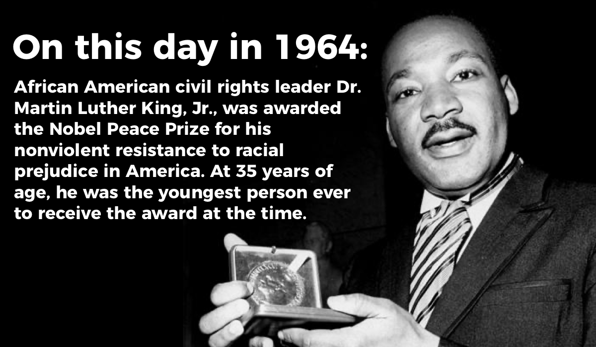

Early Life
Martin Luther King Jr. was born on January 15, 1929, in Atlanta, Georgia. He was a Baptist minister and a key leader in the American Civil Rights Movement, advocating for racial equality and justice through nonviolent resistance.
I Have a Dream
On August 28, 1963, Martin Luther King Jr. delivered his iconic "I Have a Dream" speech during the March on Washington for Jobs and Freedom. This speech remains one of the most famous and influential speeches in American history.
Legacy
Martin Luther King Jr.'s leadership and activism played a pivotal role in ending segregation and advancing civil rights in the United States. He was awarded the Nobel Peace Prize in 1964 for his efforts to combat racial inequality through nonviolent means.
Key Contributions
Martin Luther King Jr. led the Montgomery Bus Boycott, a pivotal event in the Civil Rights Movement, which ended racial segregation on public buses.
King co-founded the SCLC, an organization that played a key role in the Civil Rights Movement, advocating for nonviolent protest and civil disobedience.
King's efforts were instrumental in the passage of these landmark laws, which outlawed discrimination and protected voting rights for African Americans.
King championed nonviolent resistance as a powerful tool for social change, inspired by the teachings of Mahatma Gandhi.
Quotes
"I have a dream that my four little children will one day live in a nation where they will not be judged by the color of their skin but by the content of their character."
— Martin Luther King Jr., 1963